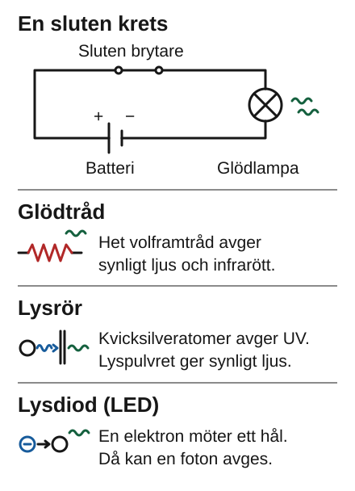

Vetenskaplig briefing · Fysik
Hur blir ström till ljus? Glödtråd, lysrör och LED
Klicka till brytaren så lyser den lilla lampan. Men vad är det egentligen som lyser? I en glödlampa ser du en het metalltråd. I ett lysrör kommer det mesta av ljuset från ett pulver på rörets insida. I en lysdiod kan ljuset födas där två delar av en halvledare möts. Skillnaden förklarar hur två lampor kan ge lika mycket ljus men dra olika mycket effekt.
Vad går runt när lampan lyser?
Följ en ledning från ett batteri genom en sluten brytare till en liten glödlampa och sedan tillbaka till batteriets andra pol. Det finns redan rörliga elektroner i tråden. Batteriets kemi håller polerna vid olika elektrisk potential. Spänningen mellan två punkter talar om hur mycket energi som kan överföras per enhet laddning mellan dem. Strömstyrkan talar om hur mycket laddning som passerar ett tvärsnitt av ledningen varje sekund.
Sätt en strömmätare före lampan och sedan efter den i samma enkla krets. När lampan lyser stadigt får du samma utslag på båda sidor. Det kommer alltså ut lika mycket laddning per sekund som det kommer in. Ändå blir lampan både varm och ljus, eftersom elektrisk energi överförs till den. Öppnar du brytaren upphör strömmen trots att det fortfarande finns spänning mellan batteriets poler.

Varför glöder just tråden?
Inuti glödlampan sitter en tunn, ofta spiralformad tråd av volfram. Den har mycket större resistans än de korta anslutningsledningarna. Samma ström går genom alla delarna, men en större del av spänningen ligger över glödtråden. Där överförs därför mer energi varje sekund. Metallens atomer vibrerar kraftigare och trådens temperatur stiger. Volfram tål så hög temperatur att tråden kan glöda intensivt utan att smälta.
Den heta tråden sänder ut strålning över många våglängder. En del ligger inom det område som ögat kan se. En stor del är infraröd strålning och bidrar därför inte till det synliga ljuset. Trådens resistans ökar dessutom när den blir varm. Vid samma pålagda spänning går därför en större ström genom den kalla tråden i tändögonblicket än senare när lampan lyser stadigt.
Halogenlampan är en glödlampa den också. En liten mängd halogen i kapseln gör att volfram som avdunstat kan transporteras tillbaka till tråden. Gasen hjälper alltså tråden att fungera vid hög temperatur. Det du ser lysa är fortfarande den heta metallen.
Hur får insidan av ett lysrör sitt ljus?
I ett klassiskt lysrör finns gas, en liten mängd kvicksilverånga och en elektrod i vardera änden. Ett driftdon hjälper till att tända röret och begränsar sedan strömmen. Inuti röret får fria elektroner fart av det elektriska fältet. När en elektron kolliderar med en kvicksilveratom kan den lämna över energi. Atomen hamnar då i ett högre energitillstånd. Det kallas att atomen exciteras.
När atomen övergår till ett lägre energitillstånd kan den avge en foton, ett litet paket strålningsenergi. Mycket av strålningen från kvicksilvret är ultraviolett och osynlig för ögat. Här behövs det vita skiktet på glaset. Lyspulvret tar upp ultraviolett strålning och sänder i sin tur ut synligt ljus. Den här omvandlingen kallas fluorescens. Samma kedja finns i den sorts lågenergilampa som är ett hopvikt eller spiralformat lysrör.
Vad lyser i en LED?
En lysdiod har två områden i en halvledare. I det ena finns gott om rörliga elektroner. I det andra kan elektroner flytta in på lediga platser som fysiker kallar hål. Ett hål beter sig som en rörlig positiv laddning när närliggande elektroner fyller den lediga platsen och lämnar en ny efter sig. Med spänning i rätt riktning kan elektroner och hål föras in mot samma område.
När en elektron fyller ett hål kan energi frigöras som en foton. Det kallas rekombination. Elektronen finns kvar i materialet men har lägre energi. Materialets energinivåer bestämmer ungefär vilken färg ljuset får. I en vanlig vit LED ger själva dioden blått ljus. Ett lyspulver omvandlar en del av det blå ljuset till längre våglängder. Blandningen av kvarvarande blått och omvandlat ljus kan ögat uppfatta som vit.
En lysdiod är känslig för strömriktningen. I framriktningen kan en liten ökning av spänningen ge en stor ökning av strömmen. En beräkning med ett enda fast resistansvärde beskriver därför inte dioden över olika spänningar. Lampans elektronik begränsar strömmen.
Kan färre watt ge lika många lumen?
Två förpackningar anger 800 lumen. Den ena anger 60 watt och den andra 9 watt. Lumen anger lampans totala ljusflöde, viktat efter hur känsligt ögat är för olika våglängder. Watt anger här hur mycket elektrisk energi lampan tar emot varje sekund. I exemplet ger båda samma ljusflöde, men den andra behöver bara 9 joule per sekund. Hur ljust det blir just på skrivbordet beror också på vart ljuset riktas.
Testa tanken: Förbrukar en effektivare lampa färre elektroner?
Ingen av lamporna förbrukar elektroner. PhETs kretsmodell låter dig flytta en strömmätare och jämföra utslagen före och efter en lampa. För att förklara en verklig lysdiods färg behöver du dessutom halvledarens energinivåer. De syns inte i simuleringens lampsymbol.
Källor och vad de tillför
- Penn State · Incandescent Bulbs. Universitetets energikurs beskriver volframtrådens uppvärmning och halogenens roll vid avdunstning.
- US EPA · Lighting Upgrade Manual. Avsnittet om lysrör beskriver urladdningen, kvicksilvret, UV-strålningen, lyspulvret och driftdonet. USA:s energidepartement · Compact Fluorescent Lighting in America, bilaga A ger den historiska bakgrunden till det kompakta röret. Äldre produktsiffror har inte använts i jämförelsen.
- Shuji Nakamura · Nobelföreläsning om blå lysdioder. En av utvecklarna förklarar hur elektroner och hål kan förenas i det ljusgivande skiktet. USA:s energidepartement · LED Basics beskriver flera tekniker för vitt ljus. Den blå dioden med lyspulver är ett exempel.
- PhET · Konstruera kretsar med likström. Universitetets simulering låter läsaren pröva strömmen i den slutna kretsen. Värdena på förpackningarna ovan är ett räkneexempel.